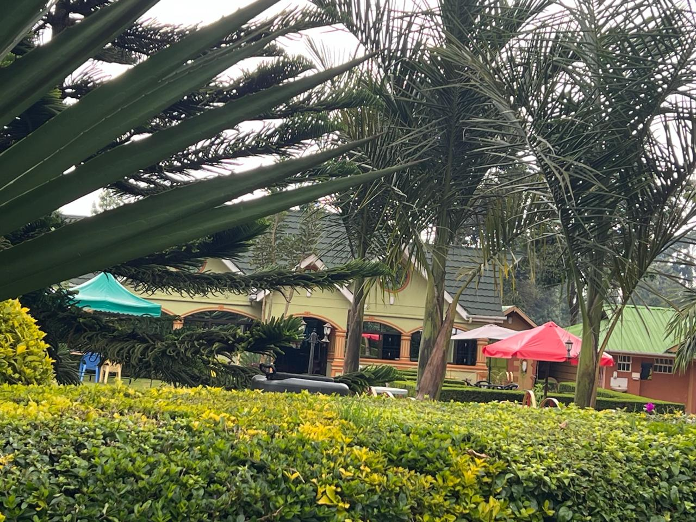
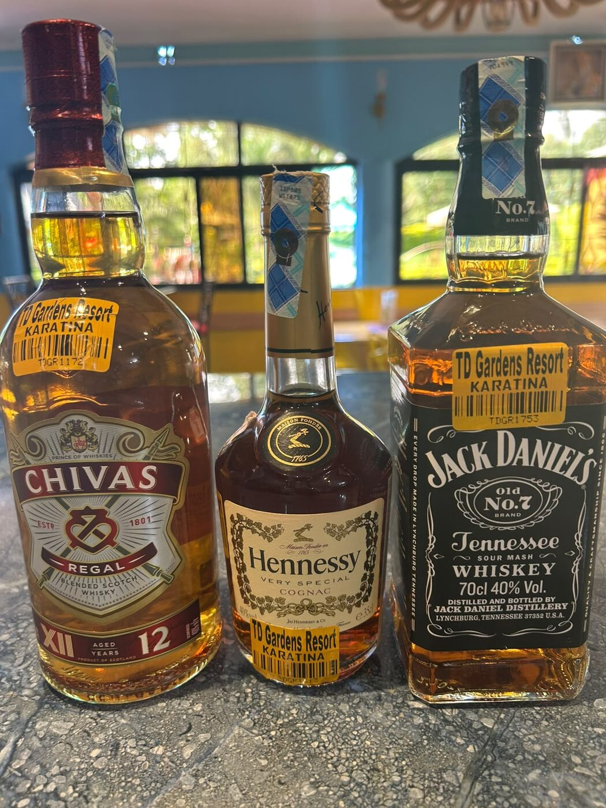
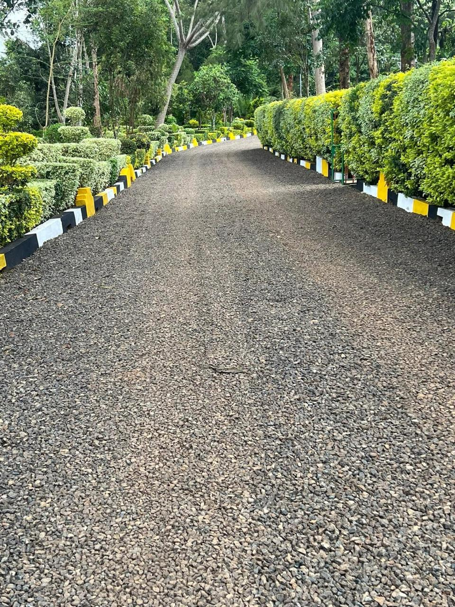
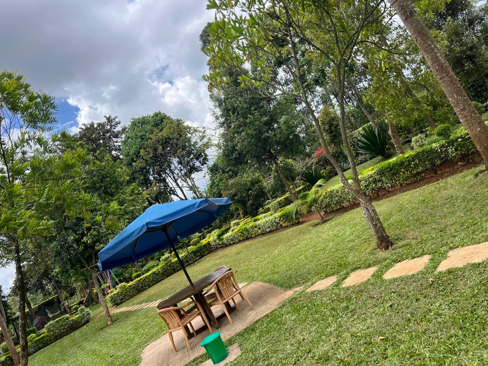

A breath of fresh air and a haven of peace.
That's the line on our own menus, and it's the reason the gardens, kitchen, and bar all get run the way they do — unhurried, well kept, and generous with portions.
Just off the highway, and worlds away from it.
TD Gardens Resort sits on Kiarithaini Road in Karatina, next to the former Riverbank Campus, about two kilometres off the Nairobi–Nyeri highway — a market town in Nyeri County on the southern slopes of Mount Kenya, roughly 1,868 metres above sea level. The short drive in off the main road is enough to trade highway noise for open lawns and garden quiet.
Karatina itself has been a market town since long before the highway existed — this stretch of Nyeri County has always been a stopping point between Nairobi and the mountain, and the gardens are built with that in mind: somewhere to properly stop, not just pass through.

Cooked to order. Stocked to last.
The kitchen works from a proper food-production setup, not a warming counter — everything from a quick plate of chips to a full kienyeji chicken is cooked when it's ordered. Sharing bundles are built for groups of two up to five, so a table doesn't have to pick one dish and stick to it.
The bar list runs the full range: draught and can beers, ciders, a proper wine list, tots by the shot, and a hard liquor shelf deep enough for a long night. Hot beverages and soft drinks cover everyone who isn't drinking.

What people notice first.
Well laid out, kept clean
Lush green lawns and tidy grounds, with clean washrooms — the basics done properly, every visit.
Easy to find, easy to park
A short turn off the Nairobi–Nyeri dual carriageway onto Kiarithaini Road, next to the former Riverbank Campus — open parking on the grounds.
Built for a crowd
Open lawn space and sharing-bundle menus make TD Gardens a regular stop for birthdays, send-offs, graduations, picnics, photoshoots, and Sunday family lunches.


See the gardens for yourself.
Two kilometres off the highway — closer than it feels once you're there.
Get directions